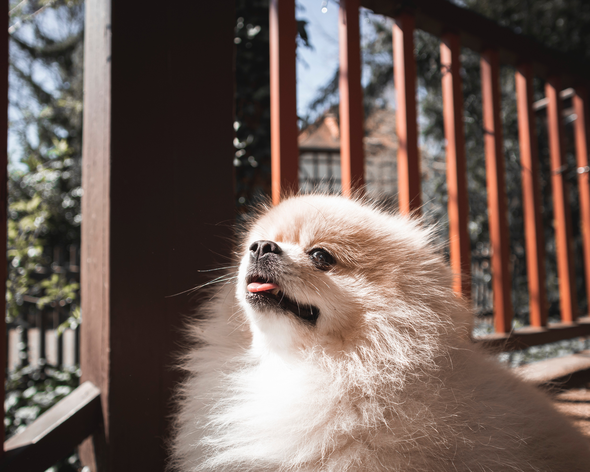

특징 지금은 작은 애완견이지만 포메라니안은 북극에서 썰매를 끌던 개들의 후손으로 초창기에는 지금보다 큰 편이었다.
공처럼 둥글고 풍성하게 부풀어 오른 털이 특징이다. 여우와 비슷한 깜찍한 얼굴에 작은 눈망울이 매력적이고 보호본능이 생기는 귀여운 품종이다.

영리하고 체구에 비해 대범한 성격을 갖고 있고 호기심도 많다. 욕심과 애교가 많아 항상 주인을 독차지하려고 한다. 귀여운 외모에 비해 튼튼하고 활발하며 활동량이 많아 어린아이의 훌륭한 친구가 될 수 있다.
잘 짖는 편이라서 짖지 못하도록 미리 훈련시켜야 한다. 고집이 센 편이어서 응석을 너무 받아주면 귀여운 악동이 될 가능성이 높다.
[네이버 지식백과] 포메라니안 [Pomeranian] (강아지 기르기, 2004. 9. 10., 이은숙)